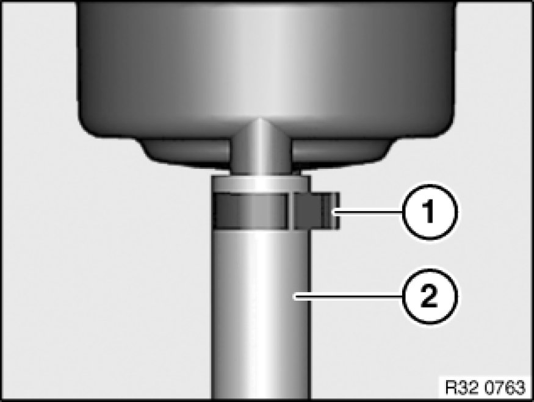
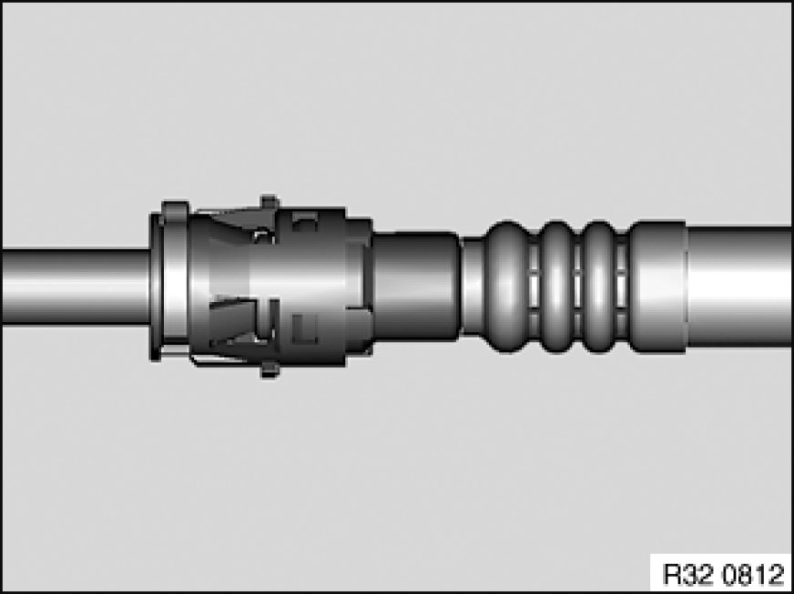

32 41 341 Replacing Cooler Return Line for Power Steering
32 41 341 - Replacing cooler return line for power steering

Warning!
Danger of poisoning 00 .. ... Danger of Poisoning If Oil Is Ingested/Absorbed Through the Skin if oil is ingested/absorbed through the skin!
Risk of injury 00 .. ... Risk of Injury If Oil Comes Into Contact With Eyes and Skin if oil comes into contact with eyes and skin!
Important!
Adhere to the utmost cleanliness. Do not allow any dirt to enter the hydraulic system.
Close off pipe connections with plugs.

Recycling:
Catch and dispose of hydraulic fluid in a suitable container.
Observe country-specific waste-disposal regulations

Necessary preliminary tasks:
- Draw off and dispose of hydraulic fluid from fluid reservoir
- Remove front underbody protection Removing and Installing/Replacing Front Underbody Protection
E81, E82, E87:
- N45, N46: Remove intake duct
- M47T2, N47: Remove fan cowl
- N52, N54: Remove intake filter housing
E88:
- Remove intake filter housing

Remove fluid reservoir from bracket 32 41 250 Removing and Installing/Replacing Fluid Reservoir For Power Steering.
Release hose clamp (1) and detach cooler return line (2) from fluid reservoir.
Installation Note:
Make sure radiator return line is laid without tension and with sufficient spacing to adjoining components.
Tightening torque 32 41 10AZ 32 41 Pump and Oil Supply.

Expose cooler return line up to connection on power steering coil.

Release quick-connect coupling 32 41 ... Notes on Hydraulic Line With Quick-Connect Coupling and seal power steering coil connection with a suitable plug.
Installation Note:
Make sure radiator return line is laid without tension and with sufficient spacing to adjoining components.
After installation:
- Fill and bleed hydraulic system
- Check pipe connections for leaks